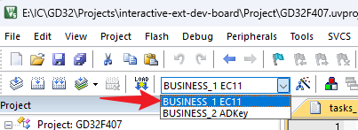
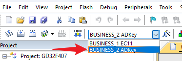
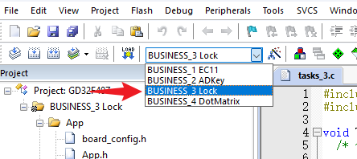
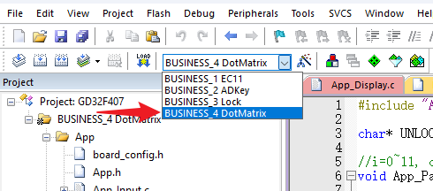

<!DOCTYPE lake>
<a class="yuque-card-link" href="https://www.yuque.com/attachments/yuque/0/2025/pdf/27903758/1751629819803-0d30031e-e61e-42b3-92fe-ae642b5b5523.pdf">localdoc：交互开发板_4个需求.pdf</a><h2 data-lake-id="S8j9T" id="S8j9T"><span data-lake-id="u31d57437" id="u31d57437">✅</span><span data-lake-id="u3c5c9c11" id="u3c5c9c11">需求一：旋钮+数码管</span></h2><blockquote data-lake-id="u90b7cf4a" id="u90b7cf4a"><p data-lake-id="u1fde7510" id="u1fde7510"><span data-lake-id="u797e1c58" id="u797e1c58">空气炸锅机，洗衣机，烘干机，消毒机，洗碗机 交互流程。</span></p></blockquote><p data-lake-id="ua2501953" id="ua2501953"><strong><span data-lake-id="ue0b84ae3" id="ue0b84ae3">数码管+旋转编码器</span></strong></p><h3 data-lake-id="LDpHQ" id="LDpHQ"><span data-lake-id="u8643d33c" id="u8643d33c">功能描述</span></h3><h4 data-lake-id="Cy8Oy" id="Cy8Oy"><span data-lake-id="u5ea4edf9" id="u5ea4edf9">默认状态，待机模式：</span></h4><p data-lake-id="u0e28b76b" id="u0e28b76b"><span data-lake-id="udfb98b2c" id="udfb98b2c">数码管显示：100（表示温度，默认100°C，或可以显示上次设置的温度）。<br/>旋转编码器：旋转编码器默认用于调整温度。<br/>顺时针旋转：增加温度（每次增加1°C，范围为80°C到199°C）。<br/>逆时针旋转：减少温度。每次减少1°C</span></p><h4 data-lake-id="AMnVr" id="AMnVr"><span data-lake-id="u6d40f1ad" id="u6d40f1ad">按下编码器，时间设置模式：</span></h4><p data-lake-id="ubd34de2a" id="ubd34de2a"><span data-lake-id="u2beb5c57" id="u2beb5c57">数码管显示：上次设定的时间或默认时间（如10分钟）。<br/></span><span data-lake-id="u13ff4c60" id="u13ff4c60">旋转编码器：现在用于调整烹饪时间。<br/></span><span data-lake-id="u7c4e7a61" id="u7c4e7a61">顺时针旋转：增加时间（每次增加1分钟，最大设定时间60分钟）。<br/></span><span data-lake-id="u7540b9d1" id="u7540b9d1">逆时针旋转：减少时间</span></p><p data-lake-id="u87d278f2" id="u87d278f2"><span data-lake-id="u1baa35ef" id="u1baa35ef">再次按下恢复为待机模式</span></p><h3 data-lake-id="zMyfF" id="zMyfF"><span data-lake-id="ud544f2fa" id="ud544f2fa">接线方式</span></h3><table class="lake-table" data-lake-id="ZUDYZ" id="ZUDYZ" margin="true" style="width: 750px"><colgroup><col width="250"/><col width="250"/><col width="250"/></colgroup><tbody><tr data-lake-id="ud10d1349" id="ud10d1349"><td data-lake-id="u536ab0d4" id="u536ab0d4"><p data-lake-id="u4db616d9" id="u4db616d9" style="text-align: center"><span data-lake-id="u436ab8bf" id="u436ab8bf">设备</span></p></td><td data-lake-id="u86dcca6d" id="u86dcca6d"><p data-lake-id="u02b9a5c7" id="u02b9a5c7" style="text-align: center"><span data-lake-id="ucc5b26c9" id="ucc5b26c9">引脚</span></p></td><td data-lake-id="u371675f2" id="u371675f2"><p data-lake-id="ued779570" id="ued779570" style="text-align: center"><span data-lake-id="u5caf9df5" id="u5caf9df5">类型</span></p></td></tr><tr data-lake-id="u614da2be" id="u614da2be"><td data-lake-id="ub4a8a5e9" id="ub4a8a5e9"><p data-lake-id="u8a477d3d" id="u8a477d3d" style="text-align: center"><span data-lake-id="u730eafda" id="u730eafda">公共线</span></p></td><td data-lake-id="u6a763c0b" id="u6a763c0b"><p data-lake-id="ubeb7afeb" id="ubeb7afeb" style="text-align: center"><span data-lake-id="u1df853c8" id="u1df853c8">3V3, GND</span></p></td><td data-lake-id="u74d95a07" id="u74d95a07"><p data-lake-id="u9430a8eb" id="u9430a8eb" style="text-align: center"><span data-lake-id="u4432db43" id="u4432db43">公共供电</span></p></td></tr><tr data-lake-id="ud3eaad81" id="ud3eaad81"><td data-lake-id="u12d1ab39" id="u12d1ab39"><p data-lake-id="uaa04d656" id="uaa04d656" style="text-align: center"><span data-lake-id="u0ec21d9c" id="u0ec21d9c">EC11旋钮输入</span></p></td><td data-lake-id="u1a82e3f0" id="u1a82e3f0"><p data-lake-id="u2ac00c31" id="u2ac00c31" style="text-align: center"><span data-lake-id="u08104031" id="u08104031">A: PD11</span></p></td><td data-lake-id="u70f80525" id="u70f80525"><p data-lake-id="u88a78186" id="u88a78186" style="text-align: center"><span data-lake-id="ub8b02a50" id="ub8b02a50">EXTI</span></p></td></tr><tr data-lake-id="u24d509db" id="u24d509db"><td data-lake-id="u06e0fd2a" id="u06e0fd2a"><p data-lake-id="uf35becd2" id="uf35becd2" style="text-align: center"><br/></p></td><td data-lake-id="u2e1f8eb8" id="u2e1f8eb8"><p data-lake-id="u84de2df8" id="u84de2df8" style="text-align: center"><span data-lake-id="u009de3bf" id="u009de3bf">B: PD13</span></p></td><td data-lake-id="u277317b4" id="u277317b4"><p data-lake-id="u8f10d48d" id="u8f10d48d" style="text-align: center"><span data-lake-id="ucd2257b2" id="ucd2257b2">EXTI</span></p></td></tr><tr data-lake-id="u8dbcd9b6" id="u8dbcd9b6"><td data-lake-id="u01e7bf66" id="u01e7bf66"><p data-lake-id="u0770b19c" id="u0770b19c" style="text-align: center"><br/></p></td><td data-lake-id="u8e6f7921" id="u8e6f7921"><p data-lake-id="u2968d834" id="u2968d834" style="text-align: center"><span data-lake-id="u1a95b1c5" id="u1a95b1c5">D: PD15</span></p></td><td data-lake-id="ufd23c22a" id="ufd23c22a"><p data-lake-id="ub304e3fb" id="ub304e3fb" style="text-align: center"><span data-lake-id="u128c366c" id="u128c366c">EXTI</span></p></td></tr><tr data-lake-id="u450cb0d0" id="u450cb0d0"><td data-lake-id="ue2214931" id="ue2214931"><p data-lake-id="u34d4dc81" id="u34d4dc81" style="text-align: center"><span data-lake-id="uf7d877cd" id="uf7d877cd">LED188数码管</span></p></td><td data-lake-id="ua8a3f12e" id="ua8a3f12e"><p data-lake-id="u6dc74632" id="u6dc74632" style="text-align: center"><span data-lake-id="u6d35407e" id="u6d35407e">LED1: PE15</span></p></td><td data-lake-id="uff1d6f6a" id="uff1d6f6a"><p data-lake-id="u32861466" id="u32861466" style="text-align: center"><span data-lake-id="udd1fcd8c" id="udd1fcd8c">GPIO</span></p></td></tr><tr data-lake-id="u16f684f8" id="u16f684f8"><td data-lake-id="u7f3f9a31" id="u7f3f9a31"><p data-lake-id="u77385a9d" id="u77385a9d" style="text-align: center"><br/></p></td><td data-lake-id="u8007d7cb" id="u8007d7cb"><p data-lake-id="u680fd802" id="u680fd802" style="text-align: center"><span data-lake-id="u22bb19ab" id="u22bb19ab">LED2: PE13</span></p></td><td data-lake-id="uedf2d9fb" id="uedf2d9fb"><p data-lake-id="u1dd2359c" id="u1dd2359c" style="text-align: center"><span data-lake-id="u27f4fad8" id="u27f4fad8">GPIO</span></p></td></tr><tr data-lake-id="uf7367976" id="uf7367976"><td data-lake-id="uce91241b" id="uce91241b"><p data-lake-id="u49eb4695" id="u49eb4695" style="text-align: center"><br/></p></td><td data-lake-id="ua04465a0" id="ua04465a0"><p data-lake-id="ufaa07072" id="ufaa07072" style="text-align: center"><span data-lake-id="u5c8763eb" id="u5c8763eb">LED3: PE11</span></p></td><td data-lake-id="u21504969" id="u21504969"><p data-lake-id="u0f886420" id="u0f886420" style="text-align: center"><span data-lake-id="u41d6fea0" id="u41d6fea0">GPIO</span></p></td></tr><tr data-lake-id="udb5189a1" id="udb5189a1"><td data-lake-id="uabe6f351" id="uabe6f351"><p data-lake-id="uf7738790" id="uf7738790" style="text-align: center"><br/></p></td><td data-lake-id="uf0d54d0d" id="uf0d54d0d"><p data-lake-id="ubf5ade49" id="ubf5ade49" style="text-align: center"><span data-lake-id="u2aedad24" id="u2aedad24">LED4: PE9</span></p></td><td data-lake-id="u4241102c" id="u4241102c"><p data-lake-id="u4fbdb01f" id="u4fbdb01f" style="text-align: center"><span data-lake-id="uef793f5d" id="uef793f5d">GPIO</span></p></td></tr><tr data-lake-id="u3074feaa" id="u3074feaa"><td data-lake-id="u89a24e98" id="u89a24e98"><p data-lake-id="u57957b48" id="u57957b48" style="text-align: center"><br/></p></td><td data-lake-id="ud3c270c0" id="ud3c270c0"><p data-lake-id="u29a4001b" id="u29a4001b" style="text-align: center"><span data-lake-id="u021ff5e4" id="u021ff5e4">LED5: PE7</span></p></td><td data-lake-id="u5fe0472d" id="u5fe0472d"><p data-lake-id="u42c9b4fe" id="u42c9b4fe" style="text-align: center"><span data-lake-id="u59ed017a" id="u59ed017a">GPIO</span></p></td></tr></tbody></table><h3 data-lake-id="hnME0" id="hnME0"><span data-lake-id="ud7a09fd2" id="ud7a09fd2">运行方式</span></h3><ol list="udadd5114"><li data-lake-id="ua64ae6e4" fid="u7948cdfa" id="ua64ae6e4"><span data-lake-id="u9a6e858a" id="u9a6e858a">按照上一步接好杜邦线</span></li><li data-lake-id="u435ee6ad" fid="u7948cdfa" id="u435ee6ad"><span data-lake-id="u3daabb56" id="u3daabb56">切换Target到</span><code data-lake-id="ue6cb688d" id="ue6cb688d"><span data-lake-id="uf91c9503" id="uf91c9503">BUSINESS_1 EC11</span></code><span data-lake-id="u58f016f9" id="u58f016f9">，编译烧录即可：</span></li></ol><p data-lake-id="u0cdee7fe" id="u0cdee7fe"></p><h2 data-lake-id="OL5Rt" id="OL5Rt"><span data-lake-id="u29e7cedb" id="u29e7cedb">✅</span><span data-lake-id="ub95e3346" id="ub95e3346">需求二：AD按键+OLED</span></h2><blockquote data-lake-id="uc3be9130" id="uc3be9130"><p data-lake-id="ub79b3076" id="ub79b3076"><span data-lake-id="u9a640448" id="u9a640448">筋膜枪，电动牙刷，烘干机，小风扇  </span></p></blockquote><p data-lake-id="u0ed83c83" id="u0ed83c83"><strong><span data-lake-id="u8b2faa41" id="u8b2faa41">adc按键+IIC屏幕</span></strong><span data-lake-id="u3d776aa9" id="u3d776aa9"> </span></p><h3 data-lake-id="I45hZ" id="I45hZ"><span data-lake-id="u72231ee0" id="u72231ee0">功能描述</span></h3><h4 data-lake-id="Hbqbf" id="Hbqbf"><span data-lake-id="u8969e6cc" id="u8969e6cc">按键功能</span></h4><p data-lake-id="u8d3d23a1" id="u8d3d23a1"><span data-lake-id="u06f06342" id="u06f06342">共3个按键</span></p><ul list="u74d34dd9"><li data-lake-id="uf97cb108" fid="u79526229" id="uf97cb108"><span data-lake-id="u9f650e18" id="u9f650e18">按键1 (模式切换键)：用于切换筋膜枪的工作模式（例如模式1、模式2、模式3等）。</span></li><li data-lake-id="u879e80ef" fid="u79526229" id="u879e80ef"><span data-lake-id="u77af84cb" id="u77af84cb">按键2 (强度调整键)：用于调节振动强度（例如低、中、高三挡）。</span></li><li data-lake-id="uafc3c688" fid="u79526229" id="uafc3c688"><span data-lake-id="u57766716" id="u57766716">按键3 (开关/暂停键)：用于开关筋膜枪，或在工作时暂停。</span></li></ul><h4 data-lake-id="X7cX2" id="X7cX2"><span data-lake-id="ue100362c" id="ue100362c">IIC屏幕显示</span></h4><p data-lake-id="ue9199506" id="ue9199506"><span data-lake-id="ud9c60621" id="ud9c60621">IIC屏幕可以用来实时显示筋膜枪的状态信息，包括当前模式、强度、工作状态、倒计时（如果有定时功能）。</span></p><p data-lake-id="uaa8d2526" id="uaa8d2526"><span data-lake-id="ue63c56e5" id="ue63c56e5">屏幕上显示信息的布局建议如下：</span></p><ul list="u25ddb1da"><li data-lake-id="ue68e02c3" fid="u0e66ca98" id="ue68e02c3"><span data-lake-id="u2d76c2d8" id="u2d76c2d8">第一行：显示当前模式（例如“Mode 1”、“Mode 2”）。</span></li><li data-lake-id="uadb07dff" fid="u0e66ca98" id="uadb07dff"><span data-lake-id="ue06d9f3f" id="ue06d9f3f">第二行：显示当前强度（例如“ Low”、“ Medium”、“High”）。</span></li><li data-lake-id="u85c062fc" fid="u0e66ca98" id="u85c062fc"><span data-lake-id="u1ca71fcc" id="u1ca71fcc">第三行：显示工作状态（例如“Running”、“Paused” + 倒计时/剩余时间）。</span></li></ul><h3 data-lake-id="fzKGy" id="fzKGy"><span data-lake-id="ub3be5e55" id="ub3be5e55">接线方式</span></h3><table class="lake-table" data-lake-id="XCHYu" id="XCHYu" margin="true" style="width: 750px"><colgroup><col width="250"/><col width="250"/><col width="250"/></colgroup><tbody><tr data-lake-id="uee609fb2" id="uee609fb2"><td data-lake-id="u1ba69fe5" id="u1ba69fe5"><p data-lake-id="uc897af42" id="uc897af42" style="text-align: center"><span data-lake-id="ufb26e86a" id="ufb26e86a">功能</span></p></td><td data-lake-id="u22d86f7c" id="u22d86f7c"><p data-lake-id="u027803d8" id="u027803d8" style="text-align: center"><span data-lake-id="uec85b264" id="uec85b264">引脚</span></p></td><td data-lake-id="ue255bf82" id="ue255bf82"><p data-lake-id="ub49261af" id="ub49261af" style="text-align: center"><span data-lake-id="u2eee7473" id="u2eee7473">说明</span></p></td></tr><tr data-lake-id="u8d431a9d" id="u8d431a9d"><td data-lake-id="u5f4578e7" id="u5f4578e7"><p data-lake-id="u2d405225" id="u2d405225" style="text-align: center"><span data-lake-id="u53fd8dfd" id="u53fd8dfd">公共线</span></p></td><td data-lake-id="u6e739d6b" id="u6e739d6b"><p data-lake-id="ud27aa395" id="ud27aa395" style="text-align: center"><span data-lake-id="ud6f28858" id="ud6f28858">3V3, GND</span></p></td><td data-lake-id="u27192336" id="u27192336"><p data-lake-id="u06420116" id="u06420116" style="text-align: center"><span data-lake-id="u792ef6b9" id="u792ef6b9">公共供电</span></p></td></tr><tr data-lake-id="u1f760dff" id="u1f760dff"><td data-lake-id="udc75463c" id="udc75463c"><p data-lake-id="u44f0aff5" id="u44f0aff5" style="text-align: center"><span data-lake-id="u75d7ecf8" id="u75d7ecf8">ADKey按键输入：K</span></p></td><td data-lake-id="u7b2b17f4" id="u7b2b17f4"><p data-lake-id="u431aabc7" id="u431aabc7" style="text-align: center"><span data-lake-id="uddc8e860" id="uddc8e860">PA2</span></p></td><td data-lake-id="u261e7424" id="u261e7424"><p data-lake-id="u19a4ae68" id="u19a4ae68" style="text-align: center"><span data-lake-id="u9e3908d9" id="u9e3908d9">ADC0</span></p></td></tr><tr data-lake-id="udd4a8cd9" id="udd4a8cd9"><td data-lake-id="u62c31d7a" id="u62c31d7a"><p data-lake-id="u269e8cdb" id="u269e8cdb" style="text-align: center"><span data-lake-id="u6c2edc0e" id="u6c2edc0e">I2C OLED输出 - SCL</span></p></td><td data-lake-id="u17e93c97" id="u17e93c97"><p data-lake-id="uae48e6a7" id="uae48e6a7" style="text-align: center"><span data-lake-id="u21c48485" id="u21c48485">PA8</span></p></td><td data-lake-id="u35959f62" id="u35959f62"><p data-lake-id="ua35e7b30" id="ua35e7b30" style="text-align: center"><span data-lake-id="u56bc257f" id="u56bc257f">I2C2 时钟线</span></p></td></tr><tr data-lake-id="u932f9116" id="u932f9116"><td data-lake-id="u1f5328c3" id="u1f5328c3"><p data-lake-id="udeaa39ec" id="udeaa39ec" style="text-align: center"><span data-lake-id="uf0934fcc" id="uf0934fcc">I2C OLED输出 - SDA</span></p></td><td data-lake-id="ub609323f" id="ub609323f"><p data-lake-id="uf7a83d84" id="uf7a83d84" style="text-align: center"><span data-lake-id="ue79614c3" id="ue79614c3">PC9</span></p></td><td data-lake-id="u572e81b0" id="u572e81b0"><p data-lake-id="u564b8fe7" id="u564b8fe7" style="text-align: center"><span data-lake-id="u55f65543" id="u55f65543">I2C2 数据线</span></p></td></tr></tbody></table><h3 data-lake-id="kI9dQ" id="kI9dQ"><span data-lake-id="u36bfba24" id="u36bfba24">运行方式</span></h3><ol list="u2ab3238c"><li data-lake-id="u6dfb01a2" fid="u071d0728" id="u6dfb01a2"><span data-lake-id="u11c9a6f6" id="u11c9a6f6">按照上一步接好杜邦线</span></li><li data-lake-id="u845910ef" fid="u071d0728" id="u845910ef"><span data-lake-id="u720052c6" id="u720052c6">切换Target到</span><code data-lake-id="u2bdcbfa1" id="u2bdcbfa1"><span data-lake-id="u50fd70b4" id="u50fd70b4">BUSINESS_2 ADKey</span></code><span data-lake-id="u1bfe5ef8" id="u1bfe5ef8">，编译烧录即可：</span></li></ol><p data-lake-id="u0c406417" id="u0c406417"></p><p data-lake-id="ud16095b7" id="ud16095b7"><br/></p><p data-lake-id="u330a13e2" id="u330a13e2"></p><h2 data-lake-id="hddaZ" id="hddaZ"><span data-lake-id="u3647c862" id="u3647c862">✅</span><span data-lake-id="ucc92a959" id="ucc92a959">需求三：密码锁+OLED</span></h2><blockquote data-lake-id="u0432ba60" id="u0432ba60"><p data-lake-id="u8ebc9930" id="u8ebc9930"><span data-lake-id="u0832228d" id="u0832228d">密码锁 </span></p></blockquote><p data-lake-id="ue4002373" id="ue4002373"><strong><span data-lake-id="u0552e9aa" id="u0552e9aa">触摸按键+ iic屏幕</span></strong></p><h3 data-lake-id="l1K6u" id="l1K6u"><span data-lake-id="u7d88e5b5" id="u7d88e5b5">功能描述</span></h3><ol list="uc1161660"><li data-lake-id="u769bdbf6" fid="ude229b64" id="u769bdbf6"><span data-lake-id="u4c1d7ac0" id="u4c1d7ac0">按键功能<br/></span><span data-lake-id="u425c2b65" id="u425c2b65">0-9数字键：用于输入密码。<br/></span><span data-lake-id="u7f3d7a5f" id="u7f3d7a5f">#键：确认键，确认输入的密码并进行验证。<br/></span><span data-lake-id="u3021760c" id="u3021760c">*键：取消键或删除键，用于清除错误输入或者返回上一步。</span></li><li data-lake-id="ua12ad7fb" fid="ude229b64" id="ua12ad7fb"><span data-lake-id="u0fe111a8" id="u0fe111a8">智能密码锁的交互流程<br/></span><span data-lake-id="uc4246d6d" id="uc4246d6d">初始状态：待机模式<br/></span><span data-lake-id="u9d39c15c" id="u9d39c15c">显示屏显示：密码锁屏幕可以显示待机状态信息，如锁的状态和用户提示。<br/></span><span data-lake-id="udc908887" id="udc908887">Locked<br/></span><span data-lake-id="u186e03cc" id="u186e03cc">Enter PIN:</span></li></ol><p data-lake-id="u740c5988" id="u740c5988"><strong><span data-lake-id="u58683da2" id="u58683da2">触摸按键功能：</span></strong><span data-lake-id="u84d41df7" id="u84d41df7"><br/></span><span data-lake-id="uf52ab2c1" id="uf52ab2c1">用户触摸数字按键（0-9）开始输入密码，每触摸一次按键，屏幕上会显示多一个*,例如：</span></p><p data-lake-id="u83f043b3" id="u83f043b3"><span data-lake-id="u2a9d1efe" id="u2a9d1efe">Enter PIN: </span><code data-lake-id="u65716b49" id="u65716b49"><span data-lake-id="u44bcbca2" id="u44bcbca2">******</span></code></p><hr/><p data-lake-id="u02594aa6" id="u02594aa6"><span data-lake-id="u7258323d" id="u7258323d">输入完密码后，按下</span><code data-lake-id="u956277c3" id="u956277c3"><span data-lake-id="ua8305b42" id="ua8305b42">#键</span></code><span data-lake-id="u2fbf6f6a" id="u2fbf6f6a">进行确认。系统会根据预设的密码进行验证。按下</span><code data-lake-id="u59005419" id="u59005419"><span data-lake-id="u5ca3b450" id="u5ca3b450">*键</span></code><span data-lake-id="u4dcc23de" id="u4dcc23de">可清除当前输入</span></p><ul list="u0ad0902b"><li data-lake-id="ud10cc417" fid="uba54a059" id="ud10cc417"><span data-lake-id="u54e913c8" id="u54e913c8">密码正确：屏幕显示 Unlocking...<br/></span><span data-lake-id="u643c6605" id="u643c6605">密码锁解锁，按下任意键回到待机状态。</span></li><li data-lake-id="u1dddfe47" fid="uba54a059" id="u1dddfe47"><span data-lake-id="u73c86674" id="u73c86674">密码错误：屏幕显示 Try Again</span></li><li data-lake-id="u2d0ff099" fid="uba54a059" id="u2d0ff099"><span data-lake-id="ube5148f1" id="ube5148f1">连续3次密码输入错误：屏幕显示 Locked for 10 sec</span><span data-lake-id="u961cc9fd" id="u961cc9fd">进入锁定状态，屏幕提示等待一段时间后再尝试</span></li><li data-lake-id="u9ccaca96" fid="uba54a059" id="u9ccaca96"><span data-lake-id="u3556b4fd" id="u3556b4fd">锁定状态：幕上显示倒计时信息Try Again in: 9 sec</span></li></ul><h3 data-lake-id="H9UwM" id="H9UwM"><span data-lake-id="uf1673efa" id="uf1673efa">接线方式</span></h3><table class="lake-table" data-lake-id="ajkFw" id="ajkFw" margin="true" style="width: 750px"><colgroup><col width="250"/><col width="250"/><col width="250"/></colgroup><tbody><tr data-lake-id="u91f6aa5d" id="u91f6aa5d"><td data-lake-id="uafb108cb" id="uafb108cb"><p data-lake-id="uc9da1baa" id="uc9da1baa" style="text-align: center"><span data-lake-id="u8e3faeef" id="u8e3faeef">功能</span></p></td><td data-lake-id="u50047009" id="u50047009"><p data-lake-id="ubf3755f1" id="ubf3755f1" style="text-align: center"><span data-lake-id="ud4bec1a0" id="ud4bec1a0">引脚</span></p></td><td data-lake-id="uc2af203a" id="uc2af203a"><p data-lake-id="ue7aa1b66" id="ue7aa1b66" style="text-align: center"><span data-lake-id="u103c8a57" id="u103c8a57">说明</span></p></td></tr><tr data-lake-id="u1231c2c0" id="u1231c2c0"><td data-lake-id="ubd6a36cb" id="ubd6a36cb"><p data-lake-id="u1ab5f93f" id="u1ab5f93f" style="text-align: center"><span data-lake-id="u8c66f9fc" id="u8c66f9fc">公共线</span></p></td><td data-lake-id="u70319964" id="u70319964"><p data-lake-id="uea094c15" id="uea094c15" style="text-align: center"><span data-lake-id="ucbd3ccc9" id="ucbd3ccc9">3V3, GND</span></p></td><td data-lake-id="ua31dc6de" id="ua31dc6de"><p data-lake-id="uf7b242fe" id="uf7b242fe" style="text-align: center"><span data-lake-id="u53019d48" id="u53019d48">供电电压和地线</span></p></td></tr><tr data-lake-id="u730cb95e" id="u730cb95e"><td data-lake-id="u63479630" id="u63479630"><p data-lake-id="ucaeec985" id="ucaeec985" style="text-align: center"><span data-lake-id="uc3879f14" id="uc3879f14">触摸按键输入</span></p></td><td data-lake-id="uf8888f19" id="uf8888f19"><p data-lake-id="ue8a56666" id="ue8a56666" style="text-align: center"><span data-lake-id="u7d673e4d" id="u7d673e4d">I2C0: PB6 SCL</span></p></td><td data-lake-id="u5b789121" id="u5b789121"><p data-lake-id="u28c8c95c" id="u28c8c95c" style="text-align: center"><span data-lake-id="ue40ed3e0" id="ue40ed3e0">触摸按键I2C时钟线</span></p></td></tr><tr data-lake-id="u88429822" id="u88429822"><td data-lake-id="uf5b51b87" id="uf5b51b87"><p data-lake-id="ud2ce8adf" id="ud2ce8adf" style="text-align: center"><br/></p></td><td data-lake-id="u19636899" id="u19636899"><p data-lake-id="u679015f1" id="u679015f1" style="text-align: center"><span data-lake-id="u72b75eab" id="u72b75eab">I2C0: PB7 SDA</span></p></td><td data-lake-id="uea8b827f" id="uea8b827f"><p data-lake-id="u2f931b05" id="u2f931b05" style="text-align: center"><span data-lake-id="ube6eef00" id="ube6eef00">触摸按键I2C数据线</span></p></td></tr><tr data-lake-id="u4177e57b" id="u4177e57b"><td data-lake-id="u16eeec42" id="u16eeec42"><p data-lake-id="u40a4f593" id="u40a4f593" style="text-align: center"><br/></p></td><td data-lake-id="u726ca632" id="u726ca632"><p data-lake-id="u3de3385b" id="u3de3385b" style="text-align: center"><span data-lake-id="ue211ba1a" id="ue211ba1a">INT: PB8</span></p></td><td data-lake-id="u9ca68b28" id="u9ca68b28"><p data-lake-id="ua747c9f1" id="ua747c9f1" style="text-align: center"><span data-lake-id="u2ef0a74a" id="u2ef0a74a">触摸按键中断信号</span></p></td></tr><tr data-lake-id="u43ee42fc" id="u43ee42fc"><td data-lake-id="uf73a8322" id="uf73a8322"><p data-lake-id="u8b4422f4" id="u8b4422f4" style="text-align: center"><span data-lake-id="ud52f5bba" id="ud52f5bba">I2C OLED输出</span></p></td><td data-lake-id="ue7268960" id="ue7268960"><p data-lake-id="u07183126" id="u07183126" style="text-align: center"><span data-lake-id="u9f2cfae0" id="u9f2cfae0">I2C2: PA8 SCL</span></p></td><td data-lake-id="u57c16ff1" id="u57c16ff1"><p data-lake-id="u9b8ef0cc" id="u9b8ef0cc" style="text-align: center"><span data-lake-id="u84a7ea6c" id="u84a7ea6c">OLED显示I2C时钟线</span></p></td></tr><tr data-lake-id="ucb52ad76" id="ucb52ad76"><td data-lake-id="ubc322d9f" id="ubc322d9f"><p data-lake-id="u087072eb" id="u087072eb" style="text-align: center"><br/></p></td><td data-lake-id="ua54c85c1" id="ua54c85c1"><p data-lake-id="udafdf8d5" id="udafdf8d5" style="text-align: center"><span data-lake-id="uf2d30fe4" id="uf2d30fe4">I2C2: PC9 SDA</span></p></td><td data-lake-id="u61879045" id="u61879045"><p data-lake-id="u549e779a" id="u549e779a" style="text-align: center"><span data-lake-id="ue0bb2f73" id="ue0bb2f73">OLED显示I2C数据线</span></p></td></tr></tbody></table><h3 data-lake-id="qvo0A" id="qvo0A"><span data-lake-id="u058fa08b" id="u058fa08b">运行方式</span></h3><ol list="u33895b5b"><li data-lake-id="u3cd23ee1" fid="u9aad9161" id="u3cd23ee1"><span data-lake-id="ufc8cbb23" id="ufc8cbb23">按照上一步接好杜邦线</span></li><li data-lake-id="uae81ff44" fid="u9aad9161" id="uae81ff44"><span data-lake-id="ub29b6633" id="ub29b6633">切换Target到</span><code data-lake-id="u669f825e" id="u669f825e"><span data-lake-id="u189a868d" id="u189a868d">BUSINESS_3 Lock</span></code><span data-lake-id="ud35af1f5" id="ud35af1f5">，编译烧录即可：</span></li></ol><p data-lake-id="u77b8dc96" id="u77b8dc96"></p><h2 data-lake-id="hr3qc" id="hr3qc"><span data-lake-id="ub9439f59" id="ub9439f59">✅</span><span data-lake-id="u365ffa89" id="u365ffa89">需求四：点阵屏+RGB</span></h2><h3 data-lake-id="XeqJX" id="XeqJX"><span data-lake-id="u4e9b0e2b" id="u4e9b0e2b">功能描述</span></h3><ul list="u96d488ed"><li data-lake-id="ube6075ed" fid="u508c48cd" id="ube6075ed"><span data-lake-id="u9fb58ded" id="u9fb58ded">点阵屏可以显示N个内容（例如：1，2，3）</span></li><li data-lake-id="u1982285f" fid="u508c48cd" id="u1982285f"><span data-lake-id="u0c9135e9" id="u0c9135e9">触摸键盘可以按下</span></li></ul><ul data-lake-indent="1" list="u96d488ed"><li data-lake-id="u21675d99" fid="ufb937a1f" id="u21675d99"><span data-lake-id="u243ead58" id="u243ead58">按下</span><code data-lake-id="u5c38079b" id="u5c38079b"><span data-lake-id="ub5506dd0" id="ub5506dd0">1，4，7，*</span></code><span data-lake-id="u26a1cf87" id="u26a1cf87"> 点阵屏内容向左滚动</span></li><li data-lake-id="ucf1c5915" fid="ufb937a1f" id="ucf1c5915"><span data-lake-id="uc00e9024" id="uc00e9024">按下</span><code data-lake-id="u7cd2d3e4" id="u7cd2d3e4"><span data-lake-id="u7239b7b6" id="u7239b7b6">3，6，9，#</span></code><span data-lake-id="u58a9e4e0" id="u58a9e4e0"> 点阵屏内容向右滚动</span></li></ul><ul list="u96d488ed" start="3"><li data-lake-id="u2e66a830" fid="u508c48cd" id="u2e66a830"><span data-lake-id="uf2b3acea" id="uf2b3acea">随着点阵屏内容的切换，RGB彩灯可以变换显示模式</span></li></ul><ul data-lake-indent="1" list="u96d488ed"><li data-lake-id="u79c83829" fid="u71149d69" id="u79c83829"><span data-lake-id="uc0f8c650" id="uc0f8c650">模式1：炫彩灯（所有颜色变换）</span></li><li data-lake-id="u0073c4b3" fid="u71149d69" id="u0073c4b3"><span data-lake-id="ub4c77599" id="ub4c77599">模式2：呼吸灯（一种颜色从灭到亮，再切另一种颜色）</span></li><li data-lake-id="u08b26c0c" fid="u71149d69" id="u08b26c0c"><span data-lake-id="u18d34612" id="u18d34612">模式3：跑马灯</span></li></ul><h3 data-lake-id="rzqPR" id="rzqPR"><span data-lake-id="u36068888" id="u36068888">接线方式</span></h3><table class="lake-table" data-lake-id="opSgr" id="opSgr" margin="true" style="width: 750px"><colgroup><col width="250"/><col width="250"/><col width="250"/></colgroup><tbody><tr data-lake-id="u0b52299b" id="u0b52299b"><td data-lake-id="uab0be7e0" id="uab0be7e0"><p data-lake-id="ufe33537f" id="ufe33537f"><span data-lake-id="u0a9b60e7" id="u0a9b60e7">功能</span></p></td><td data-lake-id="u6848230a" id="u6848230a"><p data-lake-id="uce7e6095" id="uce7e6095"><span data-lake-id="u3824054c" id="u3824054c">引脚</span></p></td><td data-lake-id="u1dd901a8" id="u1dd901a8"><p data-lake-id="u326250c6" id="u326250c6"><span data-lake-id="u3434cbe0" id="u3434cbe0">说明</span></p></td></tr><tr data-lake-id="uc91ec870" id="uc91ec870"><td data-lake-id="ufce2706b" id="ufce2706b"><p data-lake-id="u8114b935" id="u8114b935"><span data-lake-id="ua9381da7" id="ua9381da7">公共线</span></p></td><td data-lake-id="uae8fa51f" id="uae8fa51f"><p data-lake-id="u8b797acd" id="u8b797acd"><span data-lake-id="u4825fbd4" id="u4825fbd4">3V3, GND, 5V</span></p></td><td data-lake-id="ubd1bc3ae" id="ubd1bc3ae"><p data-lake-id="u64a97642" id="u64a97642"><span data-lake-id="ue234b0c4" id="ue234b0c4">供电和接地</span></p></td></tr><tr data-lake-id="u5fe7a824" id="u5fe7a824"><td data-lake-id="u870dce30" id="u870dce30"><p data-lake-id="u198f75e3" id="u198f75e3"><span data-lake-id="u4d10c54c" id="u4d10c54c">触摸按键输入接线</span></p></td><td data-lake-id="u594751ef" id="u594751ef"><p data-lake-id="u23c29583" id="u23c29583"><span data-lake-id="u80bb7b92" id="u80bb7b92">I2C0: PB6</span></p></td><td data-lake-id="u2c18e333" id="u2c18e333"><p data-lake-id="ufe7f7260" id="ufe7f7260"><span data-lake-id="u5639fb83" id="u5639fb83">SCL</span></p></td></tr><tr data-lake-id="uc3257b92" id="uc3257b92"><td data-lake-id="u0ba923d6" id="u0ba923d6"><p data-lake-id="u3d6aa1a8" id="u3d6aa1a8"><br/></p></td><td data-lake-id="u70d7568e" id="u70d7568e"><p data-lake-id="u6f75c2eb" id="u6f75c2eb"><span data-lake-id="uff9296ec" id="uff9296ec">I2C0: PB7</span></p></td><td data-lake-id="u4ce94499" id="u4ce94499"><p data-lake-id="ucf93c2e7" id="ucf93c2e7"><span data-lake-id="uc38f4a4f" id="uc38f4a4f">SDA</span></p></td></tr><tr data-lake-id="ud75d396d" id="ud75d396d"><td data-lake-id="u80aad942" id="u80aad942"><p data-lake-id="u057d63c6" id="u057d63c6"><br/></p></td><td data-lake-id="u33ef40c7" id="u33ef40c7"><p data-lake-id="u9d898272" id="u9d898272"><span data-lake-id="u55a94df1" id="u55a94df1">INT: PB8</span></p></td><td data-lake-id="ubf7d0333" id="ubf7d0333"><p data-lake-id="u597c61a4" id="u597c61a4"><span data-lake-id="u8f8c6099" id="u8f8c6099">中断信号</span></p></td></tr><tr data-lake-id="u9424f0eb" id="u9424f0eb"><td data-lake-id="ufcf58656" id="ufcf58656"><p data-lake-id="ucb0e1532" id="ucb0e1532"><span data-lake-id="u0d71b4ec" id="u0d71b4ec">点阵屏输出接线</span></p></td><td data-lake-id="u67c18161" id="u67c18161"><p data-lake-id="ub7ad49a8" id="ub7ad49a8"><span data-lake-id="u53f5a9b2" id="u53f5a9b2">SPI0: PA5</span></p></td><td data-lake-id="u91534843" id="u91534843"><p data-lake-id="u4f7a19bd" id="u4f7a19bd"><span data-lake-id="u06a7c7aa" id="u06a7c7aa">CLK</span></p></td></tr><tr data-lake-id="uf8207d93" id="uf8207d93"><td data-lake-id="u80ff1bf4" id="u80ff1bf4"><p data-lake-id="ua55bf090" id="ua55bf090"><br/></p></td><td data-lake-id="u0d89c887" id="u0d89c887"><p data-lake-id="u13d21400" id="u13d21400"><span data-lake-id="u3e58de58" id="u3e58de58">SPI0: PA7</span></p></td><td data-lake-id="uecc1fcac" id="uecc1fcac"><p data-lake-id="ueb2847cb" id="ueb2847cb"><span data-lake-id="uebbf1350" id="uebbf1350">MOSI  (IN)</span></p></td></tr><tr data-lake-id="u0ff497ba" id="u0ff497ba"><td data-lake-id="u733b83be" id="u733b83be"><p data-lake-id="u84ce9373" id="u84ce9373"><br/></p></td><td data-lake-id="u30490cef" id="u30490cef"><p data-lake-id="u6769074d" id="u6769074d"><span data-lake-id="u80492d84" id="u80492d84">SPI0: PA6</span></p></td><td data-lake-id="u1ac12020" id="u1ac12020"><p data-lake-id="uda2e5c5b" id="uda2e5c5b"><span data-lake-id="u4a68a17b" id="u4a68a17b">CS</span></p></td></tr><tr data-lake-id="ud7fd4470" id="ud7fd4470"><td data-lake-id="u3f3dcaec" id="u3f3dcaec"><p data-lake-id="u8b7b620b" id="u8b7b620b"><span data-lake-id="u32a7e673" id="u32a7e673">WS2812</span></p></td><td data-lake-id="u04cea973" id="u04cea973"><p data-lake-id="u844d0b7c" id="u844d0b7c"><span data-lake-id="ue334f924" id="ue334f924">SPI1: PB15</span></p></td><td data-lake-id="ube92de92" id="ube92de92"><p data-lake-id="u1186490c" id="u1186490c"><span data-lake-id="uc0aee36e" id="uc0aee36e">MOSI</span></p></td></tr></tbody></table><h3 data-lake-id="nHxIN" id="nHxIN"><span data-lake-id="ub22bc53d" id="ub22bc53d">运行方式</span></h3><ol list="u1340e1e1"><li data-lake-id="u40eeb146" fid="u27eabd6f" id="u40eeb146"><span data-lake-id="u57662254" id="u57662254">按照上一步接好杜邦线</span></li><li data-lake-id="u5a5959c7" fid="u27eabd6f" id="u5a5959c7"><span data-lake-id="u420a0bb1" id="u420a0bb1">切换Target到</span><code data-lake-id="u20770959" id="u20770959"><span data-lake-id="ua0e3f95f" id="ua0e3f95f">BUSINESS_4 DotMatrix</span></code><span data-lake-id="u2b52ae36" id="u2b52ae36">，编译烧录即可：</span></li></ol><p data-lake-id="ufc25caa1" id="ufc25caa1"></p>